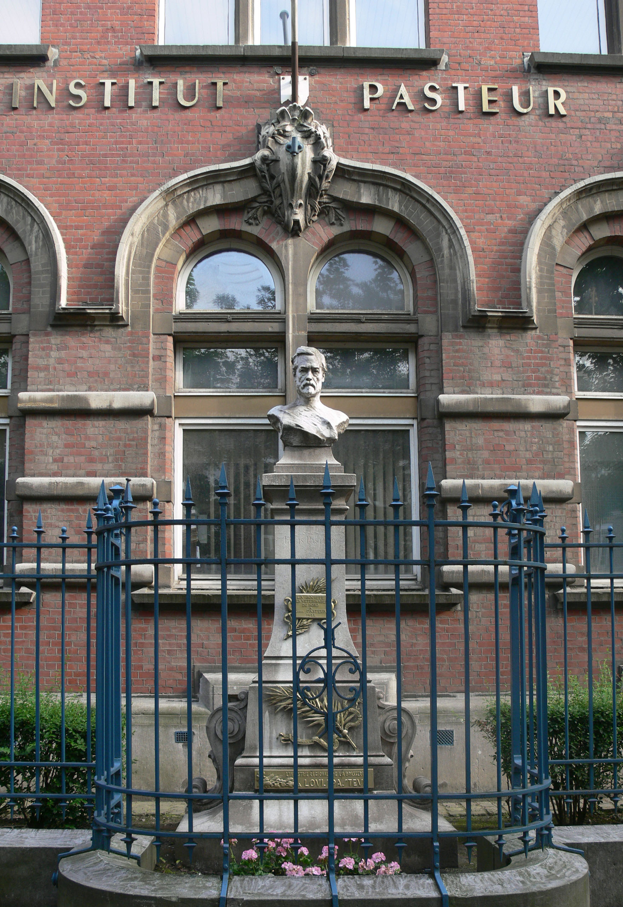

Celebrite
Albert Calmette

Albert Calmette est un médecin et bactériologiste militaire français, né le 12 juillet 1863 à Nice et mort le 29 octobre 1933 à Paris. Sa renommée tient à la mise au point entre 1904 et 1928, avec Camille Guérin, de la vaccination contre la tuberculose grâce au BCG.
Louis Pasteur
Louis Pasteur, né à Dole (Jura) le 27 décembre 1822 et mort à Marnes-la-Coquette (à cette époque en Seine-et-Oise) le 28 septembre 1895, est un scientifique français, chimiste et physicien de formation, pionnier de la microbiologie, qui, de son vivant même, connut une grande notoriété pour avoir mis au point un vaccin contre la rage.
Roger Salengro

Roger Salengro, né et mort à Lille (30 mai 1890-18 novembre 1936), est un homme politique socialiste français. Député du Nord et maire de Lille, il devient en juin 1936 ministre de l'Intérieur du gouvernement Blum ; il met fin à ses jours en novembre de la même année, après avoir été la cible d'une campagne de presse qui l'accusait d'avoir déserté pendant la Première Guerre mondiale.